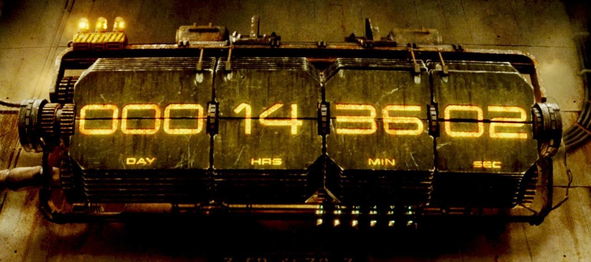

State of tests@project in 2015
CODE
python - 2554 files/630 kloc
js/coffescript - 2300 files/180 kloc
unittest - 375 files/44.5 kloc/1737 tests
selenium - 733 files/63.8 kloc/1058 tests
jasmine/karma - 7 files/304 loc/15? tests
How this does not break every day?
Actually it does
124 critical/major bugs this month
6.2 bugs every day
Days since kaiju attack?

Builds since 5 Jan 2015
Total 10270
Why am I not writing tests?
Easier to test in isolation
Than to reproduce the whole case
Cycle of Doom
Ctrl+S -> Alt-Tab -> F5 -> Alt-Tab
Cycle of Happiness
Ctrl+S -> Ctrl+S -> Ctrl+S
Code becomes outdated fast!
Some commits in the code are from 2010
There are bugs in them too
from project.lib.testing.testcase import TestCase
class TestMath(TestCase):
def test_plus(self):
self.assertEqual(2 + 2, 4, "Something is awry")
pi test app -t project/tests/test_math.py
make test tests=project/tests/test_math
It's a simple controller with an action!
Smoke test it
class PublicationListTestCase(TestCase):
records = [CompanyOwnerAndAdmin]
def test_smoke_publication_list_page(self):
login(CompanyOwnerAndAdmin)
page_url = url.cabinet.absolute(
controller='publication',
action='index'
)
resp = app.get(page_url)
self.assertEqual(200, resp.status_int)
class BaseAttributeBinding(Record):
__model__ = AttributeBinding
id = unique(rand.int, min=2 ** 30, max=2 ** 31 - 1)
attribute = BaseAttribute
category = BaseProductCategory
position = unique(rand.int, min=2 ** 30, max=2 ** 31 - 1)
user = BaseUser
help = unique(rand.unicode, 255)
group = BaseAttributeBindingGroup
attribute_values = [BaseMultiSelectAttributeValue]
value = {
"munit_id": 36011, # кг
"min": None,
"max": None,
}
What about side effects ?
Catch 'em
from project.lib.testing.mailbox import mailbox
from project.lib.testing.taskqueue import taskqueue_ctx, taskqueue
class TestAuctionNotification(TestCase):
records = [ActiveStatePurchase, Merchant]
context_managers = [request_ctx, taskqueue_ctx]
def test_email_notification(self):
notify_auction_next_day()
self.assertEqual(len(mailbox), 1)
notify_auction_next_day.delay()
self.assertEqual(len(taskqueue), 1)
I have an external dependency!
Mock It
from mock import patch
class TestApiRequest(unittest.TestCase):
@patch('requests.post',
_patch_request_post_citywarehouses_response)
def test_api_request_with_correct_response(self):
query = ['file', {}, [
['auth', {}, u"Ваш Ключ"],
['citywarehouses', {}, []],
]]
result, error = api_request(query)
self.assertIsNone(error)
self.assertIsNotNone(result)
Instant Karma
describe("VendorPeek Test Suite", function(){
beforeEach(function(){
$(document.body).append($("<div id='container'>"))
});
it("support company row must contain something", function(){
render(
SupportCompanyRow({
first: true,
name:"Samsung",
address:"Somewhere"}),
$("#container")
);
var html = $("#container").html();
expect(html).not.toEqual('');
});
Tests start falling misteriously after midnight!
Date is saved as UTC
But then checked as GMT+2 TZ
Obviously
Tools: find, grep, xargs, cat, python, atom, byzanz, reveal.js